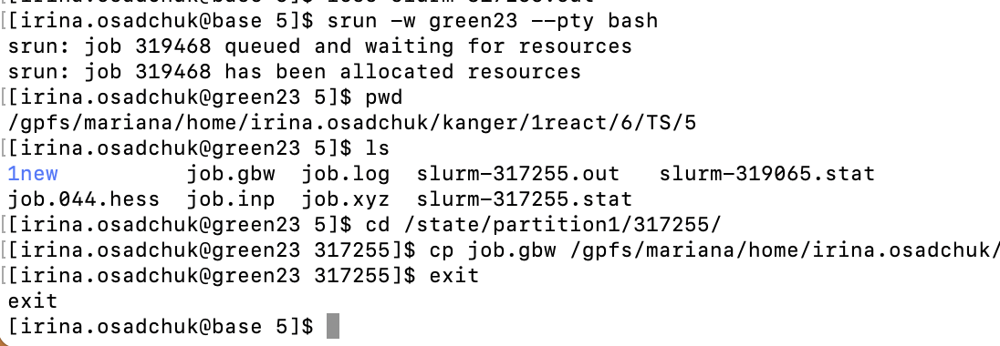

ORCA
Important note: To run ORCA, user must registered individually and have agreed to the EULA at Orcaforum.
ORCA short introduction
Make orca.slurm batch script for parallel calculations:
#!/bin/bash #SBATCH --job-name=ORCA-test #SBATCH --mem=48GB #SBATCH --nodes=1 #SBATCH --ntasks=24 #SBATCH --cpus-per-task=1 #SBATCH -t 1-00:00:00 #SBATCH --partition=common #SBATCH --no-requeue module load rocky8/all module load orca/5.0.4 export orcadir=/gpfs/mariana/software/green/Orca/orca_5_0_4_openmpi_411/ #Create scratch directory SCRATCH=/state/partition1/$SLURM_JOB_ID mkdir -p $SCRATCH cp $SLURM_SUBMIT_DIR/* $SCRATCH/ cd $SCRATCH/ #Run calculations $orcadir/orca job.inp > $SLURM_SUBMIT_DIR/job.log #Copy files back to working directory cp $SCRATCH/* $SLURM_SUBMIT_DIR rm *tmp* #Clean after yourself rm -rf $SCRATCH
or orca-single-core.slurm batch script for single core calculations:
Click to expand
#!/bin/bash #SBATCH --job-name=Job_Name #SBATCH --mem=2GB #SBATCH --nodes=1 #SBATCH --ntasks=1 #SBATCH --cpus-per-task=1 #SBATCH -t 10:00:00 #SBATCH --partition=common #SBATCH --no-requeue module load rocky8/all module load orca/5.0.4 export orcadir=/gpfs/mariana/software/green/Orca/orca_5_0_4_openmpi_411/ #Create scratch directory SCRATCH=/state/partition1/$SLURM_JOB_ID mkdir -p $SCRATCH cp $SLURM_SUBMIT_DIR/* $SCRATCH/ cd $SCRATCH/ #Run calculations $orcadir/orca job.inp > $SLURM_SUBMIT_DIR/job.log #Copy files back to working directory cp $SCRATCH/* $SLURM_SUBMIT_DIR rm *tmp* #Clean after yourself rm -rf $SCRATCH
Copy job-input file job.inp (for single core run remove core specification block).
Submit the job on base:
sbatch orca.slurm
NB! More cores does not mean faster!!! See benchmarks.
NB! To ORCA parallel run full path name is needed. Single core calculations can be performed with justorcacommand.Check results using visualization software.
ORCA long version
Environment
There are currently only latest ORCA 5.0.4 version is available. Environment is set up by the commands:
module load rocky8/all
module load orca/5.0.4
The first time use, user has to agree to the licenses:
touch ~/.licenses/orca-accepted
if this is the first user license agreement, the following commands should be given:
mkdir .licenses
touch ~/.licenses/orca-accepted
NB! After agreeing to the license, user has to log out and log in again to be able run ORCA.
Running ORCA jobs
ORCA input files are executed by the command orca. This command is usually placed in slurm script.
NB! To ORCA parallel run full path name is needed, but single core calculations can be performed with just orca command.
/gpfs/mariana/software/green/Orca/orca_5_0_4_openmpi_411/orca job.inp
Single core calculations
ORCA by default execute jobs on only a single processor.
Example of ORCA input:
! RI BP86 def2-SVP def2/J D4 printbasis Opt
%maxcore 2000 #Use up to 2 GB of memory
*xyz 0 1
C 0.67650 0.42710 0.00022
H 0.75477 1.52537 0.00197
O 1.62208 -0.30498 -0.00037
S -1.01309 -0.16870 0.00021
H -1.58104 1.05112 -0.00371
*
Example of an orca-single-core.slurm batch script for single core calculations.
NB! If in slurmscript is defined more processors, they will be reserved, but not utilized.
Parallel jobs
To run multiple processors/cores job a number of cores should be specified both in ORCA input file and in slurm script. In ORCA it is done with PAL keyword (e.g. PAL4) or as a block input.
Example of ORCA input for 4 cores:
! RI BP86 def2-SVP def2/J D4 printbasis Opt
%maxcore 2000 #Use up to 2 GB of memory
%pal nprocs 4 end #Use 4 cores
*xyz 0 1
C 0.67650 0.42710 0.00022
H 0.75477 1.52537 0.00197
O 1.62208 -0.30498 -0.00037
S -1.01309 -0.16870 0.00021
H -1.58104 1.05112 -0.00371
*
Example of slurm script:
#!/bin/bash
#SBATCH --job-name=ORCA-test # Job name
#SBATCH --mem=8GB # Memory
#SBATCH --nodes=1 # Number of nodes
#SBATCH --ntasks=4 # Number of threads
#SBATCH --cpus-per-task=1
#SBATCH -t 2:00:00 # Time
#SBATCH --partition=common # Partition
#SBATCH --no-requeue # Job will not be restarted by default
module load rocky8/all
module load orca/5.0.4
export orcadir=/gpfs/mariana/software/green/Orca/orca_5_0_4_openmpi_411/
#Create scratch directory
SCRATCH=/state/partition1/$SLURM_JOB_ID
mkdir -p $SCRATCH
cp $SLURM_SUBMIT_DIR/* $SCRATCH/
cd $SCRATCH/
#Run calculations
$orcadir/orca job.inp > $SLURM_SUBMIT_DIR/job.log
cp $SCRATCH/* $SLURM_SUBMIT_DIR
#Clean after yourself
rm -rf $SCRATCH
NB! To ORCA parallel run full path name is needed.
More about ORCA input can be found at ORCA Input Library, ORCA tutorials and ORCA forum.
Memory
The default dynamic memory requested by ORCA is frequently too small for successful job termination. If amount of memory requested is insufficient, the job will be killed and in slurm-JOBID.out will appear _ “… have been killed by the cgroup out-of-memory handler”. _
Memory usage in ORCA is controlled by the %maxcore keyword.
%maxcore 2000
There is no golden rule for memory requests, since they are basis set and calculation type dependant. Usually, 2-8 GB per 1 CPU (thread) is sufficient. If Resolution of the identity (RI) approximation is used, the memory must be increased.
Data from a slurm-JOBID.stat file can be useful to determine the amount of memory required for a computation. In slurm-JOBID.stat file the efficiency of memory utilisation is shown.
Bad example:
Memory Utilized: 3.08 GB
Memory Efficiency: 11.83% of 26.00 GB
Good example:
Memory Utilized: 63.12 GB
Memory Efficiency: 98.62% of 64.00 GB
Time
Time limits depend on time partition used, see taltech user-guides. Therefore, it is recommended to request more time than is usually needed for calculation.
If job was killed due to the time limit, this will be written in the end of slurm-JOBID.out file “error: *** JOB 317255 ON green23 CANCELLED AT 2023-08-11T22:28:01 DUE TO TIME LIMIT *** “
In this case some files including checkpoint file gbw will not be copied back to the working directory. To copy files user need to run interactive session to connect to the node where calculations were done. The node number is written in both slurm-JOBID.stat and slurm-JOBID.out. In example error message it was green23.
Interactive session is started by the command:
srun -w greenXX --pty bash # connect to green node
pwd # see path to working directory
ls # see JOBID from slurm
cd /state/partition1/JOBID # go to corresponding directory on green node
cp job.gbw /gpfs/mariana/home/....../ # copy files needed to your working directory
exit # terminate interactive session
where XX - is the node number and JOBID - job serial number.

Restarting a failed/interrupted calculation
All ORCA jobs are restart jobs as default.
SCF calculations with input file name job.inp will automatically search for a file named job.gbw and will attempt to read in the old orbitals and continue the SCF from there.
MOREAD and %moinp keywords allows manually specify where to read the orbitals from.
! MORead
%moinp "job2.gbw"
# Note that if job2.gbw is the gbw file you read in then job2.inp can not be the name of the inputfile.
*xyz 0 1
Geometry optimisation is recommended to be restarted using the last geometry (job.xyz).
Numerical frequency calculations also can be restarted if .hess files from the previous calculation are presented.
!
%freq
restart true
end
NB! Checkpoint files are very heavy and after successful completion of the calculation, it is recommended to delete these files.
Coping files
During calculations ORCA creates many different additional files, by default, slurm copies all files to the user’s directory. However, the user can choose which files to copy back to the working directory.
cp $SCRATCH/*.gbw $SLURM_SUBMIT_DIR/
cp $SCRATCH/*.engrad $SLURM_SUBMIT_DIR/
cp $SCRATCH/*.xyz $SLURM_SUBMIT_DIR/
cp $tdir/*.log $SLURM_SUBMIT_DIR/
cp $tdir/*.hess $SLURM_SUBMIT_DIR/